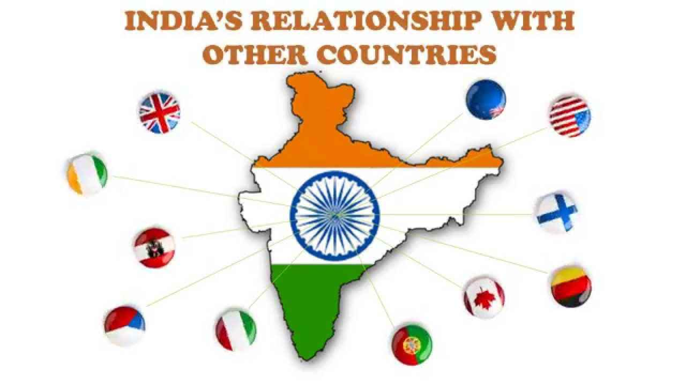

India has a long land frontier and coastline. It shares boundaries with Pakistan, Nepal, Bhutan, China, Bangladesh, Myanmar (Burma) and Sri Lanka.India has adopted a foreign policy of neutrality and non-involvement.
India and China:
When the Communists came to power in China, India had welcomed the change and was one of the first countries to recognise her. She also advocated China’s admission to the UN.

In 1954, Indian Prime Minister Jawaharlal Nehru and the Chinese Prime Minister, Chou- en-lai, had signed the “Panchsheel” agreement.
They adopted five principles:
1. Mutual respect for each other’s territorial integrity and sovereignty.
2. Mutual non-aggression.
3. Mutual non-interference in each other’s internal affairs.
4. Equality and mutual benefit.
5. Peaceful coexistence.
In spite of this, in 1962, China attacked India in the North-East and occupied a part of Indian Territory. The war ended soon but relations between India and China remained strained for a long time to come.The visits of the Indian Prime Ministers Rajiv Gandhi (in 1988) and Narasimha Rao (in 1993) to China have improved the situation to some extent. Several trade agreements have also been signed. But it is not an easy task to restore peace and mutual trust between the two countries.
India and South Asia:
South Asia comprises the countries lying to the south of the Himalayas and the Hindukush mountains. India, Pakistan, Nepal, Bhutan, Bangladesh, Maldives and Sri Lanka are the countries belonging to the region. Most of these countries were previously ruled by the British. They have similar cultures, social habits and economic problems.
All these countries face problems arising out of overpopulation, poverty, malnutrition, illiteracy etc. It is believed that these countries of South Asia could progress fast only through cooperation with each other and by devising common plans for development. This concept led to the formation of the South Asian Association for Regional Cooperation (SAARC) with the objective of mutual economic and social development.
The South Asian Association:
The late President Zia-ur-Rehman of Bangladesh first proposed the setting up of a regional body, countries, held discussions on the need for cooperation among them and identified several areas where cooperation was urgently needed.
The Foreign Ministers of these seven South Asian countries studied these proposals. The first South the SAARC Asian summit held in Dhaka in 1985 marked the formation of the SAARC.
It’s Objectives:
The Dhaka Declaration states its objective as the making of “the full use of all the human and natural resources and accelerate the economic and social development of the region”.
Broadly speaking, the objectives are:
1. Strengthening economic cooperation so as to improve the quality of life of the people of South Asia;
2. Increasing the pace of economic growth;
3. Giving mutual assistance and cooperation in areas like agriculture, scientific development, etc.; and
4. Promoting social progress and cultural development.
It was made clear from the very beginning that no member state would interfere in the internal affairs of another. Only those matters would be discussed which concerned all the member states.
After the formation of the SAARC, a number of summits were held. Each summit undertook several specific programmes. The South Asian Preferable Trade Agreement (SAPTA) was signed to inaugurate a new era of economic cooperation in South Asia. India hosted the first festival of the SAARC countries in 1992. Artists, musicians and dancers from all the SAARC countries participated in the festival.
The first SAARC Trade Fair was held in New Delhi in 1996. Bangladesh, Pakistan, Nepal, Bhutan, Sri Lanka and India participated in the fair.
Achievements:
The progress of regional cooperation among the SAARC countries was slow. Yet a few noteworthy developments took place.
1. It established a cultural link among the SAARC countries. The SAVE (SAARC Audio-Visual Exchange programme) was launched in 1987 to make people aware of one another’s cultures and make them conscious of the need for cultural exchange. Regular monthly programmes on radio and television are contributed by each member country.
2. The SAARC Regional Convention on the Suppression of Terrorism came into force in August 1988. The members also signed a SAARC Convention on Narcotic Drugs in 1990 to combat the problem of drug trafficking and drug abuse.
3. A SAARC Trade Fair with the theme “Cooperation for Growth” was organized in New Delhi.
4. The South Asian Federation (SAF) Games are held by turn in each of the member countries.
It is difficult for the SAARC to achieve its objectives because of internal dissent. There are differences between India and Pakistan on the Kashmir issue and cross-border terrorism. India also has a dispute with Bangladesh over the sharing of river waters and strained relations with Sri Lanka on Tamil militancy.
The Association of South-East Asian Nations (ASEAN):
The South-East Asian countries of Malaysia, Myanmar (Burma), Thailand and Vietnam are economically important countries. While Myanmar, Thailand and Vietnam are rice- producing countries, Malaysia produces rubber.
Possibly for fear of communist domination, the governments of Indonesia, Malaysia, Thailand, Philippines and Singapore formed the Association of South-East Asian Nations (ASEAN) in 1967. It was decided to make the region a “Zone of Peace, Freedom and Neutrality”. Later on Brunei, Vietnam, Myanmar and Laos joined the ASEAN.
The ASEAN was founded with the objective of accelerating economic growth, social progress and cultural development in the region. It sought dialogue with the powerful nations of the world in order to attract investment. These nations were called “Dialogue Partners”.
India and the ASEAN:
India has cordial relations with the ASEAN countries. She was made a full-fledged Dialogue Partner in 1995. Her relations with the ASEAN countries improved. India was also represented at the ASEAN Regional Forum Conference in Manila (1998).
India and Nepal:
Being a small landlocked country, Nepal depends on India for economic support and transit facilities. Almost all of her imports pass through Indian ports. India has made a significant contribution to economic and social developments of Nepal. She built the 204 km long Mahendra Raj Marg to link Kathmandu and India. Agreements have been signed for greater cooperation in trade, education, industrial development and cultural exchange programmes.
There are very few travel restrictions between India and Nepal. Nepalese workers are employed in India and Nepalese students study in Indian universities.
India and Bhutan:
Bhutan, a small Himalayan kingdom, is one of the poorest countries of the world. India has helped Bhutan in her telecommunication and hydroelectric projects and in the construction of hospitals, roads and bridges.
India and Myanmar
Myanmar (Burma), which was a part of British India, became independent in 1948. Since India and Myanmar share common boundaries, they have to face problems of smuggling and illegal migration. Rajiv Gandhi visited Myanmar in 1987 and the two countries agreed to solve these problems through greater vigilance.
India supports Aung-San Suu Kyi, the Nobel peace prize winner who is the leader of the democratic movement in Myanmar.
India and Pakistan:
In 1947, India was partitioned and the country of Pakistan was born. The two countries share the same historical, linguistic and cultural heritage. Yet, ever since independence, relations between the two countries are marked by hostilities.
The Kashmir Issue:
The Kashmir problem had begun from 1947, the year of our independence. The Mountbatten Plan had given the Indians States the option of joining either India or Pakistan or remaining independent. When the British left India, Pakistan attacked Kashmir and occupied a part of the Kashmir Valley.
The Maharaja of Kashmir decided to join India and signed the instrument of accession.The Indian army moved into Kashmir and pushed back the invaders. After UN intervention, North-West Kashmir was controlled by Pakistan and the rest of the state was placed under Indian control.
The Indo-Pak War (1965):
In August 1965, Pakistan made another attempt to seize Kashmir. A war started. After UN intervention, a truce was declared and an agreement (the Tashkent Agreement) was signed in 1966. But cordiality and friendship were not established
The Indo-Pak War (1971):
Hostilities between India and Pakistan again started in 1971 when India helped Bangladesh to become independent. By the Simla Agreement (1972), Prime Minister Indira Gandhi of India and Z.A. Bhutto of Pakistan agreed to settle all problems peacefully. However, relations between India and Pakistan continue to remain strained.
Kargil War (1999):
War again broke out between the two countries when Pakistan occupied portions of Indian Territory in the Kargil area. India defeated Pakistan. Relations between India and Pakistan further worsened because of Pakistan’s involvement in terrorist activities in various parts of India, especially in the Punjab and Kashmir. This cross- border terrorism instigated by Pakistan is a grave threat to India’s security.Restraint, understanding and cooperation are needed for the establishment of lasting peace in this region.
India and Bangladesh:
In 1971, a civil war broke out between the people of East Pakistan and West Pakistan. India helped East Pakistan in her war of independence against West Pakistan. In 1971, East Pakistan became independent with India’s support. A new nation, Bangladesh, was born under Mujibur Rehman.
Subsequently, India helped Bangladesh to set her economy on a sound footing by giving her loans and technical assistance. She also sent relief to Bangladesh during natural calamities like flood and drought. Relations with Bangladesh deteriorated over the sharing of the water of the River Ganges and the refugee problem. In 1990 the two countries entered into an arrangement covering various aspects of trade and sharing of water. A 30-year treaty has been signed between the two countries over the sharing of the water of the Ganges (1996).
India and Sri Lanka:
India has cultural, historical and religious ties with Sri Lanka. Sri Lanka is facing a civil war in her northern provinces. A predominantly Tamil Hindu population of northern Sri Lanka started a movement demanding an independent state. This powerful separatist movement is led by the Liberation Tigers of Tamil Eelam (LTTE).
India, on the request of the Government of Sri Lanka sent a peace-keeping force there to restore normalcy. The Indian forces were withdrawn after three years (1990) without restoring peace.
India wants Sri Lanka to find a solution to her conflict with the Tamils who are fighting for independence. Rajiv Gandhi himself became a victim of this unresolved crisis when he was assassinated in 1991. Cordial relations have been restored between the two countries. As member states of the SAARC, both countries are working together on developmental issues.
India and the Maldives:
The republic of Maldives is a group of islands in the Indian Ocean. India shares a close and cordial relationship with Maldives. Trade and tourism are being developed between the two countries.
Indian Culture endows the place with unique rituals, believes, attitudes, art forms, handicrafts and others. An enigmatic country like India has its root deep into its custom, culture, history and religion. The more you try to enjoy this essence, the more amusing India becomes. Known for its flavored legacy and history, this land has a unique charm that accounts for its sovereignty, customs, beauty and others
 +91 9917078188
+91 9917078188 mohitpratap51@gmail.com
mohitpratap51@gmail.com www.IndianCulture.com
www.IndianCulture.com